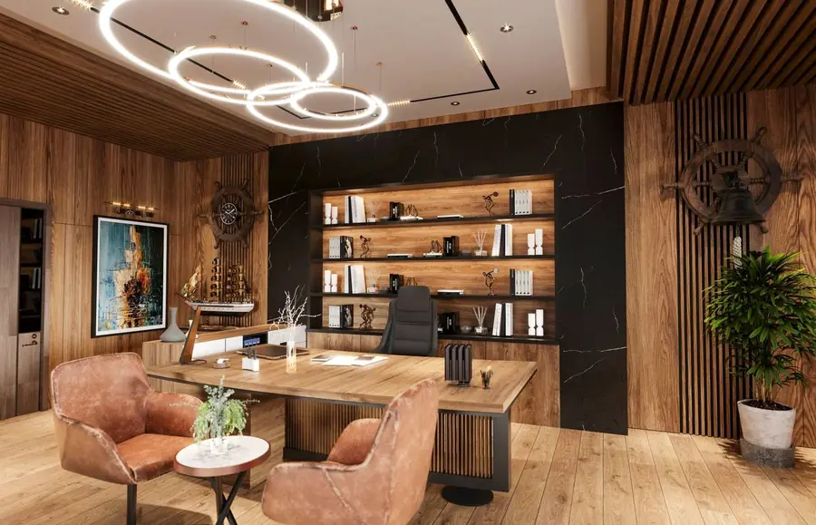

Trabalhista
Rescisão, verbas, jornada e vínculo. Análise de documentos e explicação das opções antes de qualquer medida.
Advocacia · Jequié, Bahia
O escritório atua em causas trabalhistas, previdenciárias, de família e cíveis em Jequié e região. O primeiro passo é entender o seu caso — sem promessa de resultado e sem pressa para assinar.

Áreas de atuação
Cada área tem um sócio responsável. Na primeira conversa, você já sabe quem vai analisar o caso e quais documentos precisa reunir.
Rescisão, verbas, jornada e vínculo. Análise de documentos e explicação das opções antes de qualquer medida.
Aposentadorias, auxílios e revisões. Conferência do CNIS e do tempo de contribuição.
Divórcio, guarda, alimentos e inventário. Condução reservada, com foco em acordo quando possível.
Cobranças, responsabilidade civil e contratos. Revisão de cláusulas e riscos antes de assinar.
Cobrança indevida, produto com defeito e negativa de cobertura. Orientação sobre prazos e provas.
Compra, venda, locação e regularização. Conferência de matrícula e documentação do imóvel.
Não há plantão 24 horas. Se o caso tiver prazo curto, informe isso na ligação para que a secretaria avalie a agenda.
O escritório não garante resultado nem antecipa decisão de juiz. O que se oferece é análise técnica, estratégia e acompanhamento.
Orientações
Quatro leituras curtas para organizar o que você já tem. São informações gerais — não substituem a análise de um caso concreto.
Confira se o documento traz o motivo da dispensa, a data do último dia trabalhado e a discriminação de cada verba: saldo de salário, aviso prévio, férias vencidas e proporcionais, 13º proporcional e depósitos do FGTS. O recibo deve bater com os contracheques e com a carteira de trabalho.
Não assine documento em branco nem aceite receber “por fora” sem registro. A assinatura do recibo não impede a discussão de valores pagos a menos, mas o prazo para agir é curto: em regra, dois anos a partir da saída, alcançando os cinco anos anteriores.
Guarde contrato, holerites, mensagens, escalas e comprovantes de pagamento. Esses documentos costumam ser mais úteis do que qualquer resumo feito de memória.
O CNIS reúne os vínculos informados pelas empresas. É comum faltar período antigo, aparecer empresa com nome errado ou constar atividade em desacordo com a carteira. Cada falha pode reduzir o tempo de contribuição ou a média salarial.
Antes de pedir o benefício, peça o extrato completo no Meu INSS e compare com a carteira de trabalho e com os recibos de pagamento como autônomo. Vínculos faltantes podem ser incluídos por requerimento, com documentos que comprovem o trabalho.
Não existe uma idade única de aposentadoria: quem começou a contribuir antes da reforma pode ter regras de transição diferentes. A análise depende do histórico de cada pessoa.
Reúna a certidão de óbito, documento de identidade e CPF do falecido, certidão de casamento ou de união estável, documentos dos herdeiros e a relação de bens com valores aproximados. Para imóveis, a matrícula atualizada é indispensável.
Extratos bancários, aplicações, veículos, participações em empresas e dívidas também entram no levantamento. Se houver testamento, informe onde ele foi registrado.
O inventário judicial é a regra quando há testamento, herdeiro incapaz ou discordância. O inventário extrajudicial, feito em cartório, exige consenso entre os herdeiros e a presença de advogado.
Leia com atenção o índice de reajuste, a periodicidade, a multa por rescisão e a forma de devolução da garantia. O contrato deve dizer quem paga condomínio, IPTU, água e energia, e o que é considerado reparo estrutural ou desgaste natural.
A vistoria de entrada, com fotos e descrição do estado do imóvel, evita discussão na saída. Guarde o laudo assinado pelas duas partes e as comprovações de pagamento.
Cláusulas abusivas podem ser questionadas, mas cada caso depende do texto assinado e das circunstâncias. Levar o contrato para uma leitura antes de assinar é mais barato do que litigar depois.
Conteúdo informativo, sem captação de clientela, oferta de serviços ou promessa de resultado, nos termos do Provimento 205/2021 do Conselho Federal da OAB. Cada situação exige análise individual.
Como funciona
O atendimento é reservado e começa pela escuta. Você não precisa ter o caso “pronto” para ligar.
Você liga, conta o que aconteceu e informa se existe prazo. A secretaria agenda a reunião presencial ou por vídeo.
Enviamos a lista do que precisa ser reunido. O advogado estuda o caso e aponta caminhos, riscos e custos.
Você recebe a proposta de honorários por escrito e decide com calma. Não há contratação na primeira conversa.
Os honorários são combinados por escrito antes de qualquer providência, conforme a complexidade do caso e a tabela da OAB/BA. A consulta inicial, quando cobrada, tem o valor informado no agendamento.
Compromisso
O advogado não garante resultado. Ele estuda o caso, explica o que a lei permite e acompanha o processo com transparência.
Martins & PradoAdvocacia · Jequié, Bahia
Equipe
Três advogados, áreas definidas e um único canal de atendimento. Você sabe com quem fala desde o início.
Sócia · Trabalhista e Previdenciário · OAB/BA 00.000
Atua em rescisões, horas extras, acidentes de trabalho e revisões de benefício. Atende no escritório e por videoconferência.
Sócio · Cível, Contratos e Imobiliário · OAB/BA 00.000
Cuida de cobranças, contratos, compra e venda de imóveis e questões condominiais. Revisa documentos antes da assinatura.
Família e Sucessões · OAB/BA 00.000
Atende divórcio, guarda, alimentos e inventário. Prioriza acordos que preservem o convívio e o patrimônio da família.
Dúvidas
Sim. Para quem mora fora de Jequié ou tem dificuldade de deslocamento, a reunião pode ser por videoconferência. Os documentos são combinados por um canal seguro antes da conversa.
Por contrato escrito, com valor fixo, parcelado ou vinculado ao resultado, conforme o tipo de causa. A forma é explicada antes da contratação e segue a tabela da OAB/BA.
Atua em Jequié e na região. Quando o processo corre em outra comarca, o escritório avalia a necessidade de parceria com advogado local, sempre com o cliente informado.
Ligue e diga o prazo na primeira frase. A secretaria verifica a agenda e informa se há condições de atendimento imediato. Não há plantão 24 horas.
Não. Os textos são informativos e não analisam casos concretos. Uma orientação segura exige documentos, contexto e a avaliação de um advogado.
Contato
Ligue ou escreva. A secretaria informa os horários e a documentação necessária para a primeira reunião.
Este site tem caráter informativo e institucional. Não há oferta de serviços, captação de clientela, divulgação de resultados ou promessa de êxito, em conformidade com o Código de Ética e Disciplina da OAB e o Provimento 205/2021 do Conselho Federal. A relação entre advogado e cliente só se forma com contrato escrito.